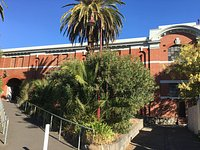
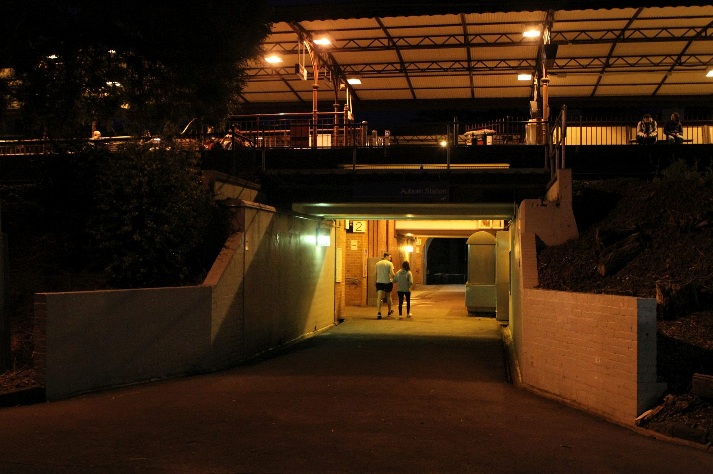
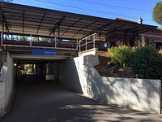

Located at Auburn Station, Hawthorn East VIC 3123, The Auburn Coffee is your local café dedicated to serving commuters and the local community with exceptional coffee on the go. As a bustling coffee takeaway business, we are positioned ideally for Auburn locals and public train transportation users seeking a quick, delicious boost to start an energetic day.
The station where we are
It come cozy at night too!
At The Auburn Coffee, we believe that a great day starts with a great cup of coffee. That’s why we are committed to using only the best ingredients sourcing high-quality Arabica beans and premium accompaniments to ensure every cup we serve is as good as it gets. Our goal is to enhance your morning and provide the energy you need to tackle the day.
Quality is a guarantee ^^
More than just a coffee shop, we pride ourselves on being a friendly face in the community. We delight in meeting new people and greeting familiar faces each day, contributing to the vibrant atmosphere of Auburn Station.
Join us for your morning coffee from 7:00 AM to 10:00 AM. On Thursdays, we extend our hours to accommodate the afternoon rush, reopening from 4:00 PM to 6:00 PM. Whether it’s your morning start or a late-day pick-me-up, we’re here to serve you when you need it most.
Here we are at Auburn